NCERT Solutions for Class 8 Science Chapter 13 Sound
Topics and Sub Topics in Class 8 Science Chapter 13 Sound:
| Section Name | Topic Name |
| 13 | Sound |
| 13.1 | Sound is Produced by a Vibrating Body |
| 13.2 | Sound Produced by Humans |
| 13.3 | Sound Needs a Medium for Propagation |
| 13.4 | We Hear Sound through Our Ears |
| 13.5 | Amplitude, Time Period and Frequency of a Vibration |
| 13.6 | Audible and Inaudible Sounds |
| 13.7 | Noise and Music |
| 13.8 | Noise Pollution |
Sound Class 8 Science NCERT Textbook Questions
Question 1.
Choose the correct answer.
Sound can travel through
(a) gases only
(b) solids only
(c) liquids only
(d) solids, liquids, and gases
Answer:
(d) solids, liquids, and gases.
Question 2.
Voice of which of the following is likely to have a minimum frequency?
(a) Baby girl
(b) Baby boy
(c) A man
(d) A woman
Answer:
(c) A man
Question 3.
In the following statements, tick ‘T’ against those which are true and ‘F’ against those which are false.
- Sound cannot travel in a vacuum.
- The number of oscillations per second of a vibrating object is called its time period.
- If the amplitude of vibration is large, the sound is feeble.
- For human ears, the audible range is 20 Hz to 20,000 Hz.
- The lower the frequency of vibration, the higher is the pitch.
- Unwanted or unpleasant sound is termed as music.
- Noise pollution may cause partial hearing impairment.
Answer:
- True
- False
- False
- True
- False
- False
- True
Question 4.
Fill in the blanks with suitable words.
- Time taken by an object to complete one oscillation is called _______
- Loudness is determined by the ________ of vibration.
- The unit of frequency is ________
- Unwanted sound is called _______
- The shrillness of a sound is determined by the ______ of vibration.
Answer:
- Time period
- Amplitude
- Hertz (Hz)
- Noise
- Frequency
Question 5.
A pendulum oscillates 40 times in 4 seconds. Find its time period and frequency.
Answer:
No. of oscillation = 40
Total time is taken = 4 seconds
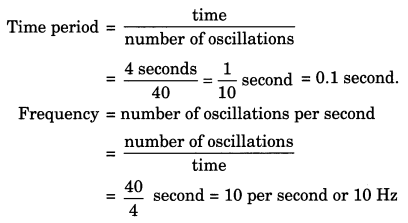
Question 6.
The sound from a mosquito is produced when it vibrates its wings at an average rate of 500 vibrations per second. What is the time period of the vibration?
Answer:
Number of vibrations per second = 500
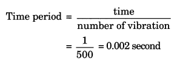
Question 7.
Identify the part which vibrates to produce sound in the following instruments.
- Dholak
- Sitar
- Flute
Answer:
- Stretched membrane
- String of sitar
- Air column
Question 8.
What is the difference between noise and music? Can music become noise sometimes?
Answer:
The type of sound which are unpleasant to listen is known as noise whereas music is a pleasant sound, which produces a sensation.
Yes, music can become noise when it’s too loud.
Question 9.
List the sources of noise pollution in your surroundings.
Answer:
Following are the major sources of noise pollution:
- Sound of vehicles
- Sound of kitchen appliances
- Sound of bursting crackers
- Sound of loudspeakers, TV, transistors
Question 10.
Explain in what way noise pollution is harmful to humans.
Answer:
Noise pollution causes:
(a) Lack of sleep
(b) Anxiety
(c) Hypertension
and these are harmful to health.
Question 11.
Your parents are going to buy a house. They have been offered one on the roadside and another three lanes away from the roadside. Which house would you suggest your parents should buy? Explain your answer.
Answer:
I would suggest my parents buy a house three lanes away from the roadside because house on the roadside would be much noisy in both days and night due to running vehicles. Whereas, a house three lanes away would be comparatively quieter as the intensity of noise decreases with the distance between the source and the listener.
Question 12.
Sketch larynx and explain its function in your own words.
Answer:
Larynx is also known as voice box. It is at the upper end of the windpipe. Two vocal cords are stretched across the voice box or larynx in such a way that it leaves a narrow slit between them for passage of air (Fig. 13.12). When lung force air through the slit, the vocal cords vibrate, producing sound. Muscles attached to the vocal cords can make the cords tight or loose.
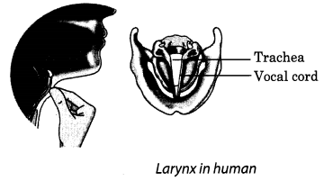
When the vocal cords are tight and thin, the type or quality of voice is different from that when they are loose and thick.
Question 13.
Lightning and thunder take place in the sky at the same time and at the same distance from us. Lightning is seen earlier and thunder is heard later. Can you explain why?
Answer:
The speed of light is more than that of the speed of sound. Thus, due to more speed of light it reaches us before sound. So, lightning is seen earlier and thunder is heard later.
Sound Class 8 Science NCERT Intext Activities Solved
Activity 1 (NCERT Textbook, Page 158)
Take a metal plate (or a shallow pan). Hang it at a convenient place in such a way that it does not touch any wall. Now strike it with a stick (Fig. 13.1). Touch the plate or pan gently with your finger. Do you feel the vibrations? Again strike the plate with the stick and hold it tightly with your hands immediately after striking. Do you still hear the sound? Touch the plate after it stops producing sound. Can you feel vibrations now?
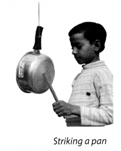
Solution:
When we touch the pan gently with our finger after striking we feel the vibration. When we hold the pan tightly after striking it, we do not hear the sound. When the pan stops producing sound it also stops vibrating. Thus, we can conclude that vibrating body produces sound.
Activity 2 (NCERT Textbook, Page 758)
Jake a rubber band. Put it around the, longer side of a pencil box (Fig. 13.2). Insert two pencils between the box and the stretched rubber. Now, pluck the rubber band somewhere in the middle. Do you hear any sound? Does the band vibrate?
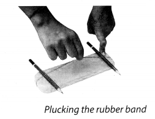
Solution:
Yes, we hear the sound on plucking the rubber band. Also, we find that the band is vibrating. Thus, all vibrating bodies produce sound.
Activity 3 (NCERT Textbook, Page 758-759)
Take a metal dish. Pour water in it. Strike it at its edge with a spoon (Fig. 13.3). Do you hear a sound? Again strike the dish and then touch it. Can you feel the dish vibrating? Strike the dish again. Look at the surface of water. Do you see any waves there? Now hold the dish. What change do you observe on the surface of water? Can you explain the change? Is there a hint to connect sound with the vibrations of a body?
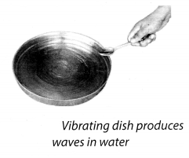
Solution:
On striking the metal dish we hear sound and on touching it we feel the dish vibrating. Striking the dish with water we see circular wave are produced. Thus vibrating object produces sound.
Activity 4 (NCERT Textbook, Page 159)
Take a hollow coconut shell and make a musical instrument ektara. You can also make it with the help of an earthen pot (Fig. 13.4). Play this instrument and identify its vibrating part.
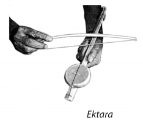
Solution:
We observed that the vibrating part of the musical instrument ektara is stretched string.
Activity 5 (NCERT Textbook, Page 160)
Take 6-8 bowls or tumblers. Fill them with water upto different levels, increasing gradually from one end to the other. Now take a pencil and strike the bowls gently. Strike all of them in succession. You will hear pleasant sounds. This is your Jaltarang (Fig. 13.5).
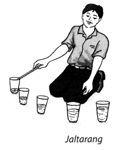
Solution:
We can hear a pleasant sound. This is due to different levels of water in the bowls.
Thus, we find that shorter the length of the vibrating air column, higher is the pitch of the sound produced.
Activity 6 (NCERT Textbook, Page 161)
Take two rubber strips of the same size. Place these two pieces one above the other and stretch them tight. Now blow air through the gap between them [Fig. 13.6(a)]. As the air blows through the stretched rubber strips, a sound is produced. You can also take a piece of paper with a narrow slit and hold it between your fingers as shown in [Fig. 13.6(b)]. Now blow through the slit and listen to the sound.
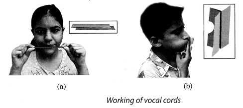
Solution:
This activity shows that vocal cords also produce sound in a similar manner when they vibrate.
Activity 7 (NCERT Textbook, Page 161)
Take a metal or glass tumbler. Make sure that it is dry. Place a cell phone in it. Ask your friend to give a ring on this cell phone from another cell phone. Listen to the ring carefully.
Now, surround the rim of the tumbler with your hands (Fig. 13.7). Put your mouth on the opening between your hands. Indicate to your friend to give a ring again. Listen to the ring while sucking air from the tumbler. Does the sound become fainter as you suck air?
Remove the tumbler from your mouth. Does the sound become loud again?
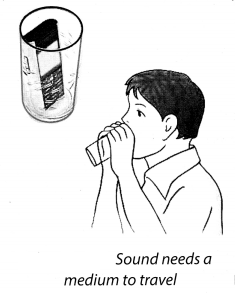
Solution:
We observed that sound becomes fainter than earlier when we try to suck air. But when we remove tumbler from our mouth the sound again becomes loud. Thus, sound needs a medium to travel.
Activity 8 (NCERT Textbook, Page 162)
Take a bucket or a bathtub. Fill it with clean water.
Take a small bell in one hand. Shake this bell inside the water to produce sound. Make sure that the bell does not touch the body of the bucket or the tub. Place your ear gently on the water surface (Fig. 13.8). Can you hear the sound of the bell? Does it indicate that sound can travel through liquids?
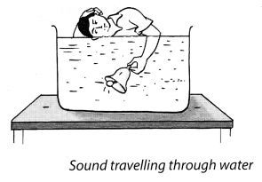
Solution:
We can hear the sound of the bell which indicates that sound can travel through liquids.
Activity 9 (NCERT Textbook, Page 162)
Take a metre scale ora long metal rod and hold its one end to your ear. Ask your friend to gently scratch or tap at the other end of the scale (Fig. 13.9).
Can you hear the sound of the scratching? Ask your friends around you if they were able to hear the same sound?
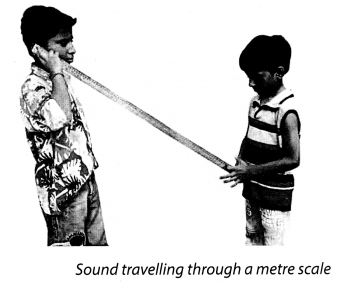
Solution:
Yes, we find that we can hear the sound of the scratch. But, the people standing around us cannot hear the same sound or we can say that it is limping not audible to them.
Activity 10 (NCERT Textbook, Page 163)
Take a plastic or tin can. Cut its ends. Stretch a piece of rubber balloon across one end of the can and fasten it with a rubber band. Put four or five grains of dry cereal on the stretched rubber. Now ask your friend to speak”Hurrey, Hurrey”from the open end (Fig. 13.10). Observe what happens to the grain. Why do the grain jump up and down?
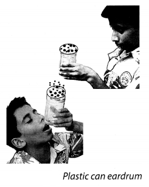
Solution:
The grain jump up and down because of the vibration caused underneath the stretched rubber. Thus when sound waves fall on the eardrum, it starts vibrating back and forth rapidly.
Activity 11 (NCERT Textbook, Page 164-165)
Take a metallic tumbler and a tablespoon. Strike the tablespoon gently at the brim of the tumbler. Hear the sound produced. Now bang the spoon on the tumbler and hear the sound produced again. Is the sound louder when the tumbler is struck hard?
Now suspend a small thermocol ball touching the rim of the tumbler (Fig. 13.11). Vibrate the tumbler by striking it. See how far the ball is displaced. The displacement of the ball is a measure of the amplitude of vibration of the tumbler.
Now, strike the tumbler gently and then with some force. Compare the amplitudes of vibrations of the tumbler in the two cases. In which case is the amplitude larger?
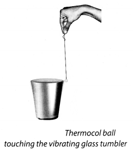
Solution:
The sound produced is louder when the tumbler is struck hard. The amplitude of vibration of the tumbler is larger when the glass is struck hard.Thus the loudness of sound depends upon the amplitude of vibration.
NCERT Solutions for Class 8 Science Chapter 13 – 1 Mark Questions and Answers
Question 1.
Choose the correct answer. Sound can travel through
- Gases only
- Solids only
- Liquids only
- Solids, liquids and gases.
Answer:
Solids, liquids and gases.
Question 2.
Voice of which of the following is likely to have minimum frequency ? [NCERT]
- Baby girl
- Baby boy
- A man
- A woman
Answer:
Aman
Question 3.
Identify the part which vibrates to produce sound in the following instruments. [NCERT]
- Dholak
- Sitar
- Flute
Answer:
- Dholak – stretched membrane
- Sitar – stretched string
- Flute – air column
Question 4.
In the following statements, tick ‘T’ against those which are true and ‘F’ against those which are false. [NCERT]
- Sound cannot travel in vacuum. (T/F)
- The number of oscillations per second of a vibrating object is called its time period. (T/F)
- If the amplitude of vibration is large, sound is feeble. (T/F)
- For human ears, the audible range is 20 Hz to 20,000 Hz. (T/F)
- The lower the frequency of vibration, the higher is the pitch. (T/F)
- Unwanted or unpleasant sound is termed as music. (T/F)
- Noise pollution may cause partial hearing impairment. (T/F)
Answer:
- T
- F
- F
- T
- F
- F
- T
Question 5.
Fill in the blanks with suitable words. [NCERT]
- Time taken by an object to complete one oscillation is called …………
- Loudness is determined by the ………….. of vibration.
- The unit of frequency is ……………
- Unwanted sound is called …………….
- Shrillness of a sound is determined by the …………….. of vibration.
Answer:
- time period
- amplitude
- Hertz
- noise
- frequency
Question 6.
Define vibration.
Answer:
Vibration is the to and fro or back and forth motion of an object.
Question 7.
Which part of the human body is responsible for producing sound ? [NCT 2011]
Answer:
In humans, the sound is produced by the voice box or larynx
Question 8.
What is the length of vocal cords in men ?
Answer:
The vocal cords in men are about 20 mm long.
Question 9.
Can sound travel in vacuum ?
Answer:
No, sound cannot travel in vacuum.
Question 10.
What is meant by oscillatory motion ?
Answer:
The to and fro motion of an object is known as oscillatory motion.
Question 11.
Define frequency.
Answer:
The number of oscillations per second is called the frequency of oscillation.
Question 12.
Define 1 hertz.
Answer:
A frequency of 1 hertz means one oscillation per second.
Question 13.
How are frequency of a sound and pitch related ?
Answer:
If the frequency of vibration is higher then the sound has a higher pitch.
Question 14.
Whose voice has a higher frequency – man or woman ?
Answer:
The voice of woman has higher frequency.
Question 15.
What is range of audible sound ?
Answer:
Sound of frequency 20 Hz to 20,000 Hz is the audible range.
Question 16.
Which animal can hear sounds of frequencies higher than 20,000 Hz ?
Answer:
Dogs can hear frequencies higher than 20,000 Hz.
Question 17.
What is meant by base loudness level ?
Answer:
The base loudness level is defined as that loudness of sound that the human ear can just perceive.
Question 18.
What is meant by noise pollution ?
Answer:
Presence of excessive or unwanted sound in the atmosphere is called noise pollutipn.
Question 19.
If the frequency of a sound is below 20 Hz, will it be audible to human beings ?
Answer:
No, it will not be audible.
Question 20.
In which state of matter does sound travel the
- slowest
- fastest ?
Answer:
- Air.
- Solids.
Question 21.
What happens to sound when it strikes a surface ?
Answer:
Sound gets reflected on striking a surface.
Question 22.
Why do we hear the sound of the hom of an approaching car before the car reaches us ?
Answer:
This happens because the speed of sound is much greater than the speed of the car.
NCERT Solutions for Class 8 Science Chapter 13 – 2 Mark Questions and Answers
Question 1.
The sound from a mosquito is produced when it vibrates its wings at an average rate of 500 vibrations per second. What is the time period of the vibration ? [NCERT]
Answer:
Time taken for 500 vibrations = 1 second
Time taken for 1 vibration = 1/500 second.
∴ Time period = 1/500 second.
Question 2.
How do plants help in reducing noise pollution ?
Answer:
Plants absorb sound and so help us in minimizing noise pollution.
Question 3.
How can we control the sources of noise pollution ?
Answer:
We can control noise pollution by designing and installing silencing devices in machines.
Question 4.
How can a hearing impaired child communicate ?
Answer:
A hearing impaired child can communicate effectively by using sign language.
Question 5.
If the amplitude increases 3 times, by how much will the loudness increase ?
Answer:
If the amplitude increases three times, the loudness will increase by a factor of 9.
Question 6.
The frequency of a given sound is 1.5 kHz. How many vibrations is it completing in one second ?
Answer:
Frequency = No.of vibrations/time
∴ No. of vibrations = Frequency x time = 1.5 x 1000 x 1 = 1500 vibrations
Question 7.
Which characteristic of a vibrating body determines
- loudness
- pitch of the sound produced by it ?
Answer:
- Amplitude.
- Frequency.
Question 8.
Why do we not hear echoes in our ordinary surroundings ?
Answer:
We do not hear echoes in our ordinary surroundings because the distance to hear echo should be more than 17 m.
Question 9.
We cannot hear the sound of the exploding meteors in the sky, though we can see them. Why ?
Answer:
Sound cannot travel through vacuum. In space there is vacuum. Light can travel through vacuum, so we can see the exploding meteor but cannot hear the explosion.
Question 10.
We can hear the supersonic jet planes flying. How ?
Answer:
The supersonic jet planes fly in the air. Since sound can travel through air, we can hear then flying.
Question 11.
What are vocal cords ? What is their function ? [NCT 2011]
Answer:
The larynx has a pair of membranes known as vocal cords stretched across their length. The vocal cords vibrate and produce sound.
Question 12.
When does a thud become music ?
Answer:
When thuds are repeated at’regular intervals, it becomes music, e.g., beating of drums or wood.
Question 13.
How do birds and insects produce sound ?
Answer:
Birds chirp with the help syrinx in their wind pipe. Insects produce sound by flapping their wings.
Question 14.
What is the function of eusfachian tube in human ear ?
Answer:
The vibrations of the spoken words reach our ears through eustachian tubes.
Question 15.
- In our body which part of the ear receives sound waves ?
- What may happen if the eardrum is absent from our ear ?
Answer:
- Pinna helps in receiving sound waves.
- If the eardrum is absent we would not be able to hear.
Question 16.
Can a hearing impaired child speak ? If not why ?
Answer:
A child having hearing impairment can not speak because if he is able to hear, he will leam to speak.
Question 17.
Give an example each of:
- stringed instrument
- percussion instrument
- wind instrument
- striking instrument
Answer:
- Violin
- Drums
- Flute
- Jal Tarang
Question 18.
Can sound travel through water ? How do whales communicate under water ?
Answer:
Yes, sound can travel through water. Since sound can travel through water, the whales can communicate with each other.
Question 19.
How is the pressure variation in a sound wave amplified in human ear ?
Answer:
The pressure variation in a sound wave causes vibrations in the eardrum. These vibrations are amplified several times by the three bones. (The hammer, anvil and stirrup).
Question 20.
How is that you can hear a friend talking in another room without seeing him ?
Answer:
Sound can travel in all directions and around comers. Light cannot travel around comers. Therefore, we can hear a friend talking in another room but cannot see him.
NCERT Solutions for Class 8 Science Chapter 13 – 3 Mark Questions and Answers
Question 1.
List sources of noise pollution in your surroundings. [NCERT]
Answer:
The major sources of noise pollution are sounds of vehicles, explosions, machines, loudspeakers.
Question 2.
What are the effects of noise pollution ?
Answer:
Due to noise pollution a person may suffer from lack of sleep, hypertension and anxiety. If a person is exposed to noise continuously he may get temporary or permanent deafness.
Question 3.
How can the noise pollution be controlled in residential area ?
Answer:
- The noisy operations must be conducted away from residential areas.
- Noise producing industries should be set away from such areas.
- Use of automobile horns be minimized.
- TV and music systems should be run at lower volumes.
Question 4.
A pendulum oscillates 40 times in 4 seconds. Find its time period and frequency. [NCT 2011, NCERT]
Answer:
40 vibrations in 4 seconds.
10 vibrations in 1 second
Frequency =10 vibrations/sec. or 10 Hz.
∴ Time period = 1/10 sec.
Question 5.
Your parents are going to buy a house. They have been offered one on the roadside and another three lanes away from the roadside. Which house would you suggest your parents should buy ? Explain your answer. [NCERT]
Answer:
I would advise my parents to buy the house three lanes away from the roadside because there the noise from automobiles would be much less.
Question 6.
What happens when we pluck the strings of a sitar ?
Answer:
When we pluck the strings of a sitar, the whole instrument vibrates and the sound is heard.
Question 7.
Why is the voice of men, women and children different ?
Answer:
The voice of men, women and children are different because the length of vocal cords are different. The length of vocal cords is longest in men and shortest in children.
Question 8.
How are we able to hear sound ?
Answer:
The eardrum is like a stretched rubber sheet. Sound vibrations make the eardrum vibrate. The eardrum sends vibrations to the inner ear. From there, the signal goes to the brain and we are able to hear.
Question 9.
What sources in the home may lead to noise ?
Answer:
Television and transistor at high volumes, some kitchen appliances, desert coolers, air conditioners all contribute to noise pollution.
Question 10.
What is the-difference between noise and music ? Can music become noise sometimes,?
Answer:
Unpleasant sounds are called noise.
Music is a sound which produces a pleasing sensation.
If the music is too loud, it becomes noise.
Question 11.
Draw a labelled diagram showing the structure of the human ear.
Answer:
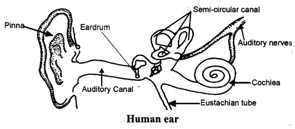
Question 12.
What is the function of:
- External ear.
- Internal ear.
Answer:
- The external ear helps us in receiving the sound waves and directing them to the eardrum.
- The internal ear has cochlea which is filled with a fluid and having tiny hair cells inside. The hairy cells change the sound vibrations into nerve impulse which travels to the brain.
The internal ear also helps us in balancing the body.
Question 13.
Give some suggestions by which we can keep our ears healthy.
Answer:
- Never insert any pointed object into the ear. Tt can damage the eardrum and make a person deaf.
- Never shout loudly in someone’s ear.
- Never hit anyone hard on their ear.
Question 14.
Can you hear the sound on the moon ? Explain.
Answer:
We cannot hear the sound on the moon because sound requires a material medium to travel. On the moon there is no atmosphere and sound cannot travel in vacuum.
Question 15.
What are ultrasounds ? How are they useful to us?
Answer:
Sound having frequency higher than 20kHz is known as ultrasound, is used for
- detecting finer faults in metal sheets.
- scanning and imaging the body for stones, tumour and foetus.
NCERT Solutions for Class 8 Science Chapter 13 – 5 Mark Questions and Answers
Question 1.
Sketch larynx and explain its function in your own words. [NCERT]
Answer:
We produce sound in the larynx of our throats. The larynx has two vocal cords, which are folds of tissue with a slit like opening between them. When we speak, air passes through the opening and the vocal cords vibrate to produce sound.
Question 2.
Lightning and thunder take place in the sky at the same time and at the same distance from us. Lightning is seen earlier and thunder is heard later. Can you explain why ? [NCERT]
Answer:
The speed of light is more than the speed of sound. Therefore, even though thunder and lightning take place simultaneously, we see the lightning earlier.
Question 3.
- What is SONAR?
- What is the basic principle of its working ?
- Explain its use.
Answer:
- SONAR refers to Sound Navigation and Ranging.
- The principle of reflection of sound is used in SONAR.
- SONAR is used to measure the depth of the ocean. Ultrasonic waves are sent from the ship down into the sea. They are received back after reflection from the sea bed. The depth is calculated by noting the time period.
Question 4.
What is the use of ultrasound in medicine and industry ?
Answer:
Use of ultrasound in medicine :
- For scanning and imaging the body for stones, tumour and foetus.
- For relieving pain in muscles and joints.
Use of ultrasound in industry :
- For detecting finer faults in metal sheets.
- In dish washing machines where water and detergent are vibrate with ultrasonic vibrators.
- For homogenising milk in milk plants.
Question 5.
What is a sonogram ? Why is it preferred to X-rays ?
Answer:
Sonogram is image of the internal organs. Ultrasound can pass through the human body and are reflected back. The reflections are recorded by computer and images are generated on the screen.
Sonogram is not harmful and is therefore used for studying the foetus or stone or tumor in the organs. On the other hand, X-rays can be harmful if humans are exposed for longer time.
Question 6.
- Name a property of sound which is
(i) similar to the property of light.
(ii) different from that of light. - Why do some people have hearing impairment ? How do they communicate with others ?
Answer:
- (i) The property of sound similar to light is that in both reflection takes place.
(ii) Sound can travel around comers but light cannot. - Some people suffer from hearing impairment because their ear drum is damaged or absent. This can be from birth or may occur later on. Such people communicate with “sign language”. They can also use “hearing aids”.
NCERT Solutions for Class 8 Science Chapter 13 MCQs
Question 1.
The maximum displacement of a vibrating body on either side of its mean position, is known as its
(a) Frequency
(b) Loudness
(c) Amplitude
(d) Pitch
Answer:
(c)
Question 2.
The frequency of a given sound is 1.5 kHz. The vibrating body is
(a) completing 1,500 vibrations in one second.
(b) taking 1,500 seconds to complete one vibration.
(c) taking 1.5 seconds to complete one vibration.
(d) completing 1.5 vibrations in one second
Answer:
(a)
Question 3.
A given sound is inaudible to the human ear, if
(a) its amplitude is too small.
(b) its frequency is below 20 Hz.
(c) its frequency is above 20 kHz.
(d) it has any of the three characteristics listed above.
Answer:
(d)
Question 4.
Sound can propagate
(a) through vacuum as well as gases
(b) only through gases and liquids
(c) only through gases and solids
(d) any of the three states of the matter.
Answer:
(d)
Question 5.
When lightning and thunder take place, they
(a) occur together and are also observed together.
(b) occur one after the other but are observed together.
(c) occur together but the thunder is observed a little after the lightning.
(d) occur together but the thunder is observed a little before the lightning
Answer:
(c)
Question 6.
Soundshaving frequency more than 20 Hz are called
(a) Infrasonic
(b) Supersonic
(c) Ultrasonic
(d) None of these
Answer:
(c)
Question 7.
Hertz is the unit of
(a) Amplitude
(b) Frequency
(c) Pitch
(d) Wavelength
Answer:
(b)
Question 8.
Loudness of sound is expressed in
(a) Hertz
(b) Decibel
(c) Seconds
(d) None of these
Answer:
(b)
More CBSE Class 8 Study Material
- NCERT Solutions for Class 8 Maths
- NCERT Solutions for Class 8 Science
- NCERT Solutions for Class 8 Social Science
- NCERT Solutions for Class 8 English
- NCERT Solutions for Class 8 English Honeydew
- NCERT Solutions for Class 8 English It So Happened
- NCERT Solutions for Class 8 Hindi
- NCERT Solutions for Class 8 Sanskrit
- NCERT Solutions